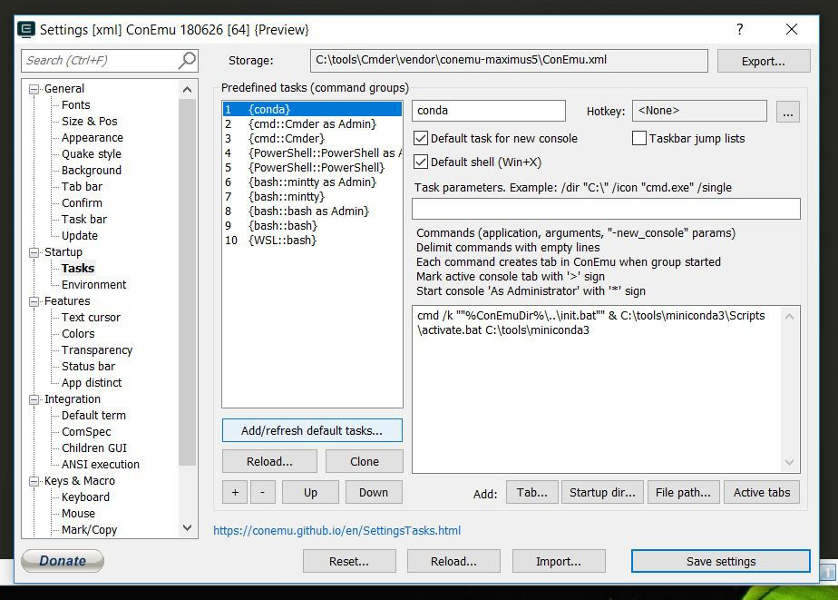
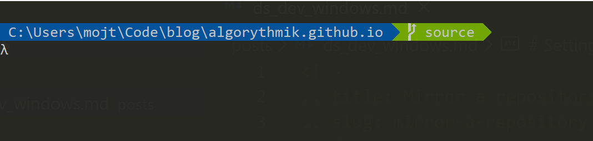

Setting up a Dev environment on Windowns
Setting up a data science dev environment on Windows:
I recently switched job and I moved from developing on macOS to windows. Here is what I settled down eventually on.
Package Manager
To install software on windows, the usuall way is to search and download the installer, optionally setting the path and related environment variable. Package managers makes these steps easier (more here). It is equivalent to brew on mac or apt/dnf/pacman in Lunix based distros. There are many third-party package managers for windows including Scoop, Chocolatey, Ninite, OneGet. I started using Chocolatey. Here you can see the guide for installing chocolately.
Terminal Emulator
A terminal emulator is a program that emulates the functionality of a terminal for windows. Cmder is one of the most popular ones. You can install it with running:
choco install cmder
In powershell.
It is protable and comes in with a slightly bigger version of git-for-windows. There is a lot of configuration options.
Python
For python version management and virtual environment managements on linux, I use pyenv. On windows, I decided to go with Conda which is a package, dependency, and environment management for different lanaguages inclduing python. In particular. I use Miniconda which only comes with the package management system and not a bundle of pre-installed packages like Anaconda. To install miniconda for python 3, run the following:
choco install miniconda3
Here you can read more on Anaconda vs. Miniconda vs. virtualenv.
Cmder integration
You can setup a task in cmder which would activate the base conda environment when you create a new console. Assume your miniconda is installed in C:\tools\miniconda3. On cmder, setup tasks, startup, tasks, add a new predefines tasks and configure it like this:

In the commands you need to put:
cmd /k ""%ConEmuDir%\..\init.bat"" & C:\tools\miniconda3\Scripts\activate.bat C:\tools\miniconda3
VSCode integrated terminal
If you use Vscode as your editor, you can configure it to use cmder in integrated shell:
"terminal.integrated.shell.windows": "C:\\WINDOWS\\System32\\cmd.exe",
"terminal.integrated.env.windows": {
"CMDER_ROOT": "C:\\tools\\Cmder"
},
"terminal.integrated.shellArgs.windows": [
"/k",
"C:\\tools\\Cmder\\vendor\\init.bat &",
"C:\\tools\\miniconda3\\Scripts\\activate.bat",
"C:\\tools\\miniconda3",
],
Powerline for cmder
Finally, if you want to add powerline to to customize your prompt, look here.

Comments